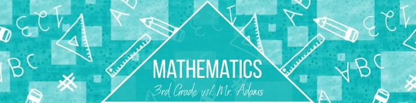
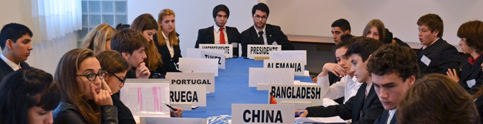

El Programa de Matemáticas busca empoderar a los adolescentes, equipándolos de mejores herramientas para que, a través de clases dinámicas e interactivas, ellos puedan tener mejores conocimientos con respecto a esta área y así mejorar en sus respectivas escuelas. Además, buscamos acortar la brecha económica que existe en la educación actual, democratizándola y brindando este programa totalmente gratuito para que los adolescentes, sin importar su situación económica, puedan aprender y llevarse una linda experiencia.
Programa de Matemáticas

¿Qué es el Programa de Matemáticas?
¿En qué consiste?
El programa de matemáticas tiene una duración de 4 meses con inscripción en cada mes. Cada mes se abren las inscripciones para los siguientes cursos: Aritmética, Álgebra, Geometría y Trigonometría. Cada estudiante decide si quiere estudiar solo un curso de acuerdo a sus propias necesidades y gustos. Los cursos se dictan los días lunes, miércoles y viernes en las noches, en el horario que el estudiante decida. Tenemos 3 distintos niveles que se ajustan a los conocimientos previos de cada estudiante. Para decidir quienes van a qué nivel, los estudiantes deberán realizar un formulario de inscripción y a su vez un examen. De acuerdo a los resultado obtenidos, los estudiantes serán ubicados en sus respectivos niveles, todo ello se realiza para que el contenido que se imparte se adecúe a el ritmo de aprendizae de cada estudiante. Además, en cada aula, tenemos pocos estudiantes para que todos tengan la posibilidad de interactuar con sus profesores y sacarles el máximo provecho.
Programa ABC del MUN

¿Qué es el Programa ABC del MUN?
El ABC del Mun es un programa que tiene como objetivo primordial democratizar el acceso a los Modelos de las Naciones Unidas (MUN) y equipar a jóvenes talentosos con las herramientas necesarias para participar satisfactoriamente en las conferencias MUN.
¿En qué consiste?
El programa tiene una duración de un mes, contando con 6 clases nocturnas los días martes y jueves. Además los estudiantes contarán con 2 Office hours para resolver dudas y finalmente tendrán una simulación para poner en práctica todo lo aprendido. Los profesores son altamente capacitados ya que cuentan con bastante experiencia participando en MUNs y ganando reconocimientos que respaldan su desempeño y arduo trabajo.